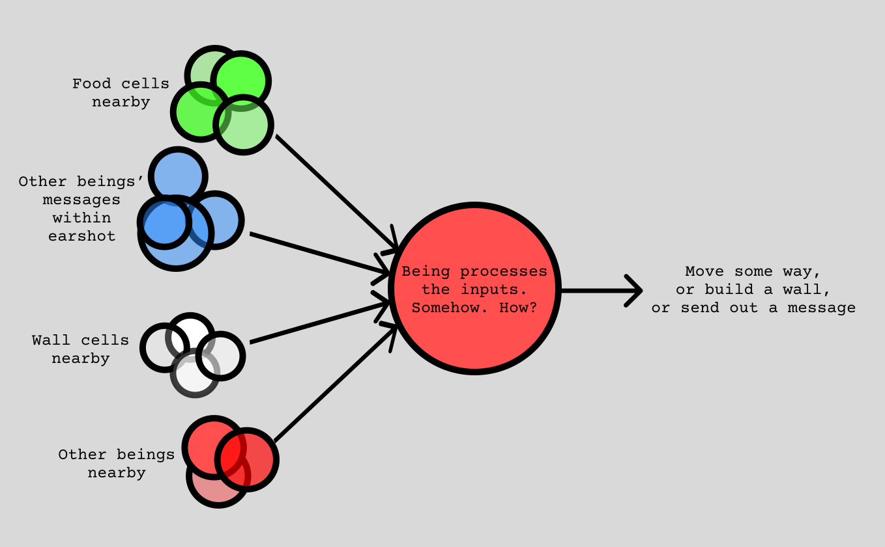

Beings' Sense-Actions
For the little circle-beings to interact with their world, by moving around, eating food, and placing walls, they need to
1. Have "sense organs"
In machine learning, everything is a vector. A sequence of disparate measurements? Vector. Your name? A bunch of vectors. Everything is a vector. You're probably a vector reading this. Neural networks can only operate on vectors. This means that their "sensory" inputs should come in the form of vectors, and naturally, we receive their "actions" as a vector too. This is my approach:
Remember our surround-collision-checking algorithm? When you're a circle looking at another circle for overlap, you can also look at all of its inner details! If it's a being-circle, its health, and the relative angle of your orientation to it. If it's a food-circle or a wall-circle, its age/value. And naturally, the relative distance between it and yourself. All of these can go into their own arrays in your own memory. It would look something like this:
[being/food/wall]_circles_inputs = {[2., 3.4, 5.234], [1.34, 2.163, 9.67], ...}
Additionally, since they can "speak," it would be pointless if they couldn't also "hear." And what is speech? You guessed it, a vector. Like before,
speech_inputs = {[1, 2, 3, 4, 5], [7, 8, 9, 10, 11], ...}
# got lazy with typing so many floating-point numbers
2. "Act"
Once all of these vectors are collected into a bunch of arrays, they're fed into our being-neural-networks, which spit out action vectors, which comprise these values:
- forward-backward change in position (single value,
-1 <= x <= 1) - change in rotation (single value,
-1 <= x <= 1) - whether to build a wall (single value,
x < 0 or x >= 0?) - whether to speak (single value,
x < 0 or x >= 0?) - if to speak, what to say? (multiple values i.e. a sub-vector, all in
range[-1, 1])
The movement-components (rotate, move, etc.) are implemented as updates to the physics engine in the next time-step. The "speechlets" are released as emanating bursts out into the world, centred at where they were first uttered. All beings that overlap with this expanding burst can "hear" it, i.e. the speech sub-vector goes into their speech_inputs array.
The next section deals with the architecture details of the neural networks.